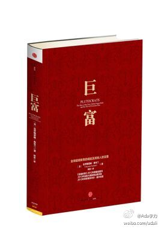
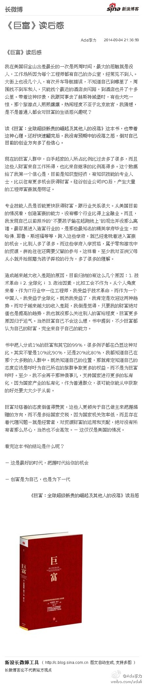

@陈旭东HZ //@营养师佳凝:特别喜欢你评论里面的一条，合作过很多老板，真正能超水平发挥的，还是那种欣赏并肯定自己的人，即使自身身上有非常多不足 (9月3日 22:50)@Ada李力:曾经和一位上司怎么也搞不好，我那时还没学会明智地抽身就走，于是折腾自己，差点抑郁，也向同事求教。同事说她有过同样历程，最后她妥协了，改变了自己适应老板。我评估了下，仅仅为那样一个老板改变自己？！太不值得了。- 现在还是能听到类似SB适应理论，就是劝你去适应一个人。
回复@阿朱:我不期望自己有这样的运气，而是自己以后要争取做个欣赏别人长处，能肯定别人的人。 //@阿朱:那种欣赏并肯定自己的人，这是不是得碰运气？ //@Ada李力:@陈旭东HZ //@营养师佳凝:特别喜欢你评论里面的一条，合作过很多老板，真正能超水平发挥的，还是那种欣赏并肯定自己的人，即使自身@Ada李力:曾经和一位上司怎么也搞不好，我那时还没学会明智地抽身就走，于是折腾自己，差点抑郁，也向同事求教。同事说她有过同样历程，最后她妥协了，改变了自己适应老板。我评估了下，仅仅为那样一个老板改变自己？！太不值得了。- 现在还是能听到类似SB适应理论，就是劝你去适应一个人。
//@阿朱: 成熟就是目标承诺、自我管理、担当后果，其他都可归为世故一类@Ada李力:年龄增长让我意识到不要跟自己的本性作对。现在做事情很像我童年少年时期的状态，即忙碌又沉浸，很笃定。其实就是不再顾忌别人眼光，只做自己想做愿意做的事情罢了。在有些人看来，这是任性，这是为所欲为，这是不成熟。- 如果没有自己，成熟有何意义？
MARK//@CrespoXiao:转发微博@触电报微博:【《互联网时代》10集全】时代《互联网时代》 第一集 时代_《互联网时代》_视频_央视网；浪潮《互联网时代》 第二集 浪潮_《互联网时代》_视频_央视网；能量《互联网时代》 第三集 能量_经济频道_央视网(cctv.com)；再构网页链接；崛起网页链接；迁徙网页链接；控制网页链接；忧虑网页链接；世界网页链接；眺望互联网时代第10集：眺望 296次播放 00:00
//@老黄:那些在选择上患得患失的人，大多数是对自己不自信，对自己的投入也不自信，认为命运会左右未来的人。每天被一堆乱七八糟的东西干扰，过着浮躁、纠结的生活，看别人挣钱，就感觉世界对自己如此不公。许多人都相信，公司做得好会让自己也有所改变，但事实上，公司好不好跟个体没太大关系@技术人攻略:技术人攻略访谈三十四《魔豆老黄：何妨吟啸且徐行》@老黄 @魔豆路由器 创始人&CEO，历任优酷土豆集团副总裁、土豆网技术副总裁、中国移动12580高级总监、新浪网研发中心总监。二十多年的职业经历中，他恪守两条重要价值观：第一，不纠结于机会；第二，学会清醒认识个人价值。 网页链接
发表了博文《《巨富》读后感》《巨富》读后感我在美国旧金山出差最长的一次是两周时间，最大的感触就是没人，工作场所因为每个工程师都有自己的办公室，经常见不到人。大街上也没几个人，有次开车导航错误，不知道自《巨富》读后感 
《巨富》读后感： 《巨富》读后感 我在美国旧金山出差最长的一次是两周时间，最大的感触就是没人，工作场所因为每个工程师都有自己的办公室，经常见不到人。大街上也没几个人，有次开车导航错误...文字版>> 网页链接 （新浪长微博>> 网页链接） 
虽然博客已经没有多少人读，可是写些长文对自己的益处更多。在wordpress.com上设置的博客访问经常受阻，今天尝试了用邮件发博客，很方便。就是wordrpess给你随机生成一个邮箱地址：xxxxxx@post.wordpress.com 把博客内容的邮件发到这个邮箱就可以，发送邮箱是随机的。